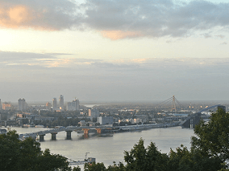
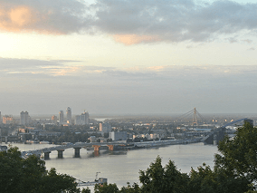
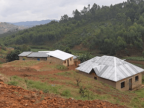
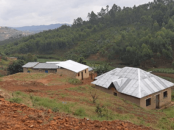

De patria a patria
Un viaje épico de Kentucky a Burundi pasando por Gales y Ucrania

Conoce un poco mejor los lugares de los que proceden tus colegas en
línea
Todo ser humano es un artista, un ser de la libertad, llamado a
participar en la transformación y reforma de las condiciones, el
pensamiento y las estructuras que conforman e influyen en nuestras
vidas.
— Joseph Beuys
La ciudad de TripleTen ha reunido a profesionales de diferentes
rincones del mundo. Hoy, la Galería de Arte TripleTen se enorgullece
de presentar historias y fotografías de algunas de las personas que
dedican su tiempo y esfuerzo a hacer que los futuros profesionales
de la tecnología de esta ciudad se sientan como en casa. Cada uno de
nosotros tiene una historia única sobre el lugar del que procede. No
dudes en añadir a nuestra colección tu propia historia y una obra de
arte visual dedicada a tu ciudad natal. No importa de dónde seas,
nos alegra que seas nuestro vecino.
Cricieth, Gales

Compra esta obra como NFT
Artistas
Steffan Warren, editor jefe
Kseniya Glagoleva, gerente de proyectos
Las ruinas medievales del castillo de Cricieth dominan la ciudad
desde una roca que extiende sobre el mar. Se cree que fue
construido por Llewelyn el Grande en el S. XIII. 800 años
después, la autodenominada Perla de Gales en las costas de
Snowdonia, se ha convertido en un popular destino turístico
durante los meses de verano.
A pocos pasos de camino al castillo, puedes disfrutar de los
mejores helados del mundo en Cadwalader's, cuyo ingrediente
secreto se rumorea que son algas marinas de la localidad. Otra
cosa por la que es famosa Cricieth es por haber ganado el premio
*Gales en flor* durante cinco años seguidos por sus
espectaculares muestras florales alrededor de la ciudad. También
vio nacer a David Lloyd George, el único galés que ha sido
Primer Ministro del Reino Unido.
.svg)


 



 
